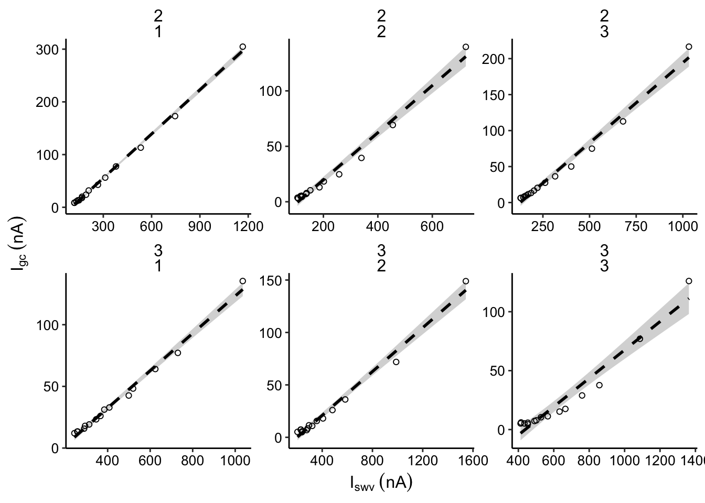
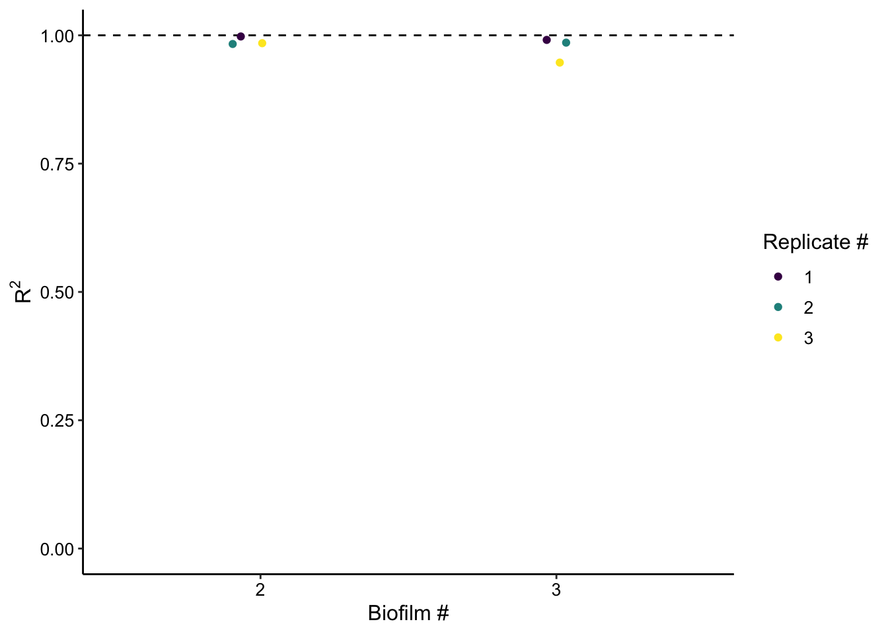

library(tidyverse)
library(cowplot)
library(broom)
library(modelr)
library(viridis)
library(lubridate)
library(hms)
library(knitr)
library(kableExtra)
library(patchwork)
library(VGAM)
library(nls.multstart)
knitr::opts_chunk$set(tidy.opts=list(width.cutoff=60), echo = TRUE, message=FALSE, warning=FALSE, fig.align="center")
source("../../../IDA/tools/echem_processing_tools.R")
source("../../../IDA/tools/plotting_tools.R")
theme_set(theme_1())df_blank <- read_csv("../../../IDA/11_28_18_blank_IDA/Processing/11_28_18_swv_gc_soak_processed.csv") %>%
select(reactor,electrode_from_swv,signal_from_swv,electrode_from_gc, signal_from_gc,echem_from_swv, minutes_from_swv ) %>%
mutate(run = 1, rep = 0, treatment='blank', exp_id = 'blank')
df_3 <- read_csv("../../../IDA/01_23_19_psoralen_nonequil_3/Processing/01_23_19_processed_swv_gc_all.csv") %>%
select(treatment,run,rep,reactor,electrode_from_swv,signal_from_swv,electrode_from_gc, signal_from_gc, echem_from_swv, minutes_from_swv ) %>%
mutate(exp_id = '3') %>%
filter(run!=1 | treatment!='psoralen' | rep<14 ) %>%
filter(run!=4 | treatment!='control' | rep>1 )
df_2_control <- read_csv("../../../IDA/01_17_19_psoralen_nonequil_2/Processing/01_17_19_swv_gc_control_dap_processed.csv")
df_2_psoralen <- read_csv("../../../IDA/01_17_19_psoralen_nonequil_2/Processing/01_17_19_swv_gc_psoralen_dap_processed.csv")
df_2 <- rbind(df_2_control,df_2_psoralen) %>%
select(treatment,run, rep, reactor,electrode_from_swv,signal_from_swv,electrode_from_gc, signal_from_gc, echem_from_swv, minutes_from_swv ) %>%
mutate(exp_id = '2')
df_all <- rbind(df_2,df_3,df_blank) %>% mutate()plot_control_dap <- ggplot(df_all %>%
filter(electrode_from_swv=='i1' &
electrode_from_gc=='i2' &
treatment!='blank' &
echem_from_swv=='SWV' &
treatment =='control'),
aes(x = signal_from_swv, y = signal_from_gc)) +
geom_smooth(method='lm', linetype = 2, color = 'black')+
geom_point(shape = 21) +
facet_wrap(exp_id~run,scales='free')+
scale_color_viridis(discrete = T)
plot_control_dap_styled <- plot_control_dap +
scale_x_continuous(labels = nA_label) +
scale_y_continuous(labels = nA_label) +
labs(x = expression(I[swv]~(nA)), y = expression(I[gc]~(nA)))
plot_control_dap_styled
swv_gc_all <- df_all %>%
filter(electrode_from_swv=='i1' &
electrode_from_gc=='i2' &
treatment!='blank' &
echem_from_swv=='SWV' &
treatment =='control') %>%
group_by(exp_id,run) %>%
do(fit = lm(signal_from_gc~signal_from_swv,data = .))
swv_gc_fit_tidy <- tidy(swv_gc_all,fit,conf.int=T)
swv_gc_fit_glance <- glance(swv_gc_all,fit) %>%
select(exp_id,run,r.squared,adj.r.squared)
swv_gc_fit <- left_join(swv_gc_fit_tidy %>% filter(term=='signal_from_swv'), swv_gc_fit_glance, by = c('exp_id','run'))
# Layout
plot_rsquare <- ggplot(swv_gc_fit, aes(x = exp_id, y = r.squared,color = factor(run)))+
geom_hline(yintercept = 1, linetype = 2) +
geom_jitter(height = 0, width = 0.1)+
scale_color_viridis(discrete = T) + ylim(0, NA)
# Styling
plot_rsquare_styled <- plot_rsquare +
labs(x = 'Biofilm #', y = expression(R^2), color = 'Replicate #')
plot_rsquare_styled